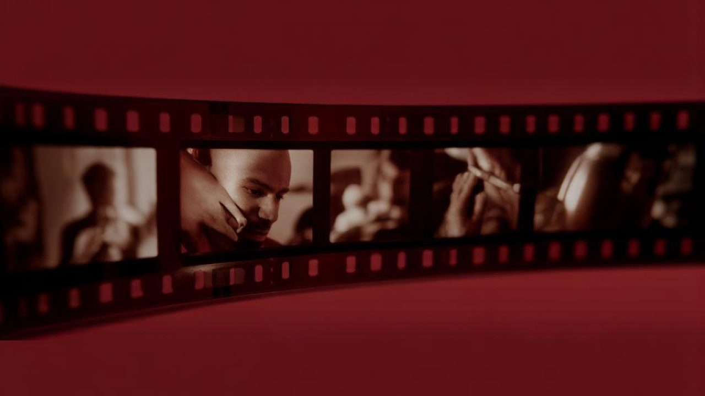

Концепция и серии
Как собрать узнаваемый образ бренда с помощью ИИ‑фото и видео

Образ бренда складывается из повторов. Человек видит десяток материалов, замечает в них общее и начинает узнавать компанию раньше, чем читает название.
Нейросети ускоряют производство таких материалов. Сам образ они не придумывают — его задаёт решение о том, чем бренд отличается от соседей по полке.
С чего начинается образ: позиционирование
До первой генерации нужно ответить на четыре вопроса.
- Кто покупает? Не «женщины 25–45», а конкретнее: в какой ситуации человек ищет ваш товар.
- Вместо чего покупают? С чем сравнивают и от чего отказываются в вашу пользу.
- Что обещает бренд? Одно предложение без прилагательных.
- Какая ценовая полка? Визуал дорогого и доступного товара строится по-разному.
Пока этих ответов нет, любая генерация — угадывание. Оно может выйти красивым, но связать материалы в один образ не получится.
Характер бренда и его визуальный язык
Характер удобно описывать парами противоположностей — так проще принимать решения по каждому кадру.
| Характер | Свет | Палитра | Композиция |
|---|---|---|---|
| Спокойный, дорогой | Мягкий, длинные тени | Приглушённая, 2 цвета | Много воздуха, товар по центру |
| Энергичный, молодой | Жёсткий, резкая тень | Контрастная, яркий акцент | Плотный кадр, смещение от центра |
| Тёплый, домашний | Естественный, окно | Тёплая, натуральные оттенки | Товар в среде, детали быта |
| Технологичный | Направленный, подсветка контуров | Холодная, тёмный фон | Геометрия, симметрия |
Таблица не для того, чтобы выбрать строку и следовать ей буквально. Она показывает, что решения связаны: выбрав мягкий свет и приглушённую палитру, вы уже определили и композицию.
Как разрабатывается концепция
Концепция — это документ на одну-две страницы, который отвечает на вопрос «как выглядят наши материалы». Обычно в ней:
- описание характера бренда словами;
- палитра с образцами;
- решение по свету;
- типы сцен, которые снимаем;
- ракурсы и положение товара;
- шрифтовая пара и правила подписей;
- список запретов — что мы не делаем никогда;
- десять референсов «так» и пять «не так».
Список запретов недооценивают, а он экономит больше всего времени. Формулировка «никаких коллажей и никаких градиентных подложек под текст» снимает половину будущих споров.
Повторяемые элементы
Узнавание держится на нескольких деталях, которые кочуют из кадра в кадр:
- один и тот же тип фона — фактура или цвет;
- постоянный акцентный цвет;
- одинаковое положение логотипа;
- сквозной предмет: ткань, растение, посуда, фирменная упаковка;
- одинаковый характер тени;
- повторяющийся ракурс;
- одинаковая финальная обработка.
Достаточно трёх-четырёх таких элементов. Больше — материалы становятся однообразными, и лента перестаёт удерживать внимание.
Почему серия работает, а отдельные кадры нет
Одна генерация даёт картинку. Двадцать генераций по одной концепции дают образ.
Разница не в количестве, а в том, что кадры серии знают друг о друге. Они снимаются с общей палитрой, общим светом и общим набором сцен, поэтому складываются в целое.
Практический минимум для старта — двенадцать материалов: четыре каталожных кадра, четыре сцены использования, два крупных плана и два атмосферных с местом под текст. На этом наборе видно, держится концепция или разваливается.
Проверка серии: выложите материалы сеткой и уберите логотипы. Если сетка выглядит как работа одной команды — концепция работает.
Что добавляет видео
Видео закрывает то, чего не может статичный кадр.
- Показывает движение. Как открывается, как льётся, как садится по фигуре.
- Удерживает дольше. Ролик даёт несколько секунд внимания вместо доли секунды.
- Занимает форматы, где статика проигрывает. Видеообложка карточки, сторис, короткие вертикальные ролики.
- Оживляет уже готовое. Кадр из серии превращается в короткий ролик с движением камеры — концепция при этом не меняется.
Последний пункт удобен экономически: серия фотографий и набор роликов делаются из одного материала, и образ остаётся общим. Что входит в работу над роликами и сколько это занимает — на странице нейровидео для бренда.
Адаптация под площадки
Один материал живёт в разных пропорциях, и снимать его нужно с запасом.
| Площадка | Что учитываем |
|---|---|
| Карточка маркетплейса | Вертикальный формат, читаемость в мелком превью, место под графику |
| Сторис и вертикальные ролики | Обрезка сверху и снизу интерфейсом, безопасная зона по центру |
| Лента соцсетей | Квадрат и вертикаль, узнаваемость в сетке профиля |
| Сайт | Горизонталь, место под заголовок и кнопку |
| Реклама | Несколько вариантов одной сцены под тесты |
Правило простое: снимать шире, чем нужно. Кадр без запаса по краям невозможно переложить в другой формат без потерь.
Три сценария: товар, эксперт, компания
Товар
Опора — сам продукт. Серия строится вокруг постоянного фона, света и ракурса; меняются сцены использования и сезоны. Ключевое требование — товар в каждом кадре остаётся собой: форма, цвет и надписи сверяются с исходником.
Эксперт или личный бренд
Опора — лицо человека. Здесь строже всего с достоверностью: несовпадение с реальной внешностью подрывает доверие быстрее, чем полное отсутствие фотографий. Нужны хорошие исходные снимки без обработки, с разных ракурсов и при ровном свете. Серия обычно включает портреты, кадры в рабочей обстановке и горизонтальные материалы под обложки.
Компания и команда
Опора — среда и общий стиль. Серия собирается из портретов сотрудников в одинаковом свете, кадров процесса и деталей рабочего пространства. Здесь особенно важно единообразие: разнобойные портреты команды выглядят как случайная подборка людей.
Как всё это собирается в одну систему — на странице нейроконтента для брендов, примеры работ — в портфолио.
Короткие ответы
Сколько времени занимает разработка концепции?
Обычно несколько дней: разбор продукта и аудитории, подбор референсов, согласование. Производство серии начинается после того, как концепция утверждена.
Можно ли обойтись без концепции и сразу генерировать?
Можно, если нужен один-два материала. Для серии концепция экономит время: без неё каждый кадр обсуждается заново.
Что делать, если у бренда уже есть фотографии?
Они становятся основой. Новые материалы подгоняются под существующий свет и палитру, чтобы старое и новое стояло рядом без разнобоя.